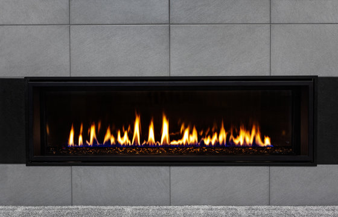

Fireplace Safety System
The Challenge
Design and build a safety system for a fireplace that can detect dangerous conditions (like uncombusted gas) and automatically shut off the gas supply to prevent accidents or turn on a warning light based on the severity of the condition. The system should be reliable, cheap, and work in real-time to ensure safety.

The Research
This challenge was presented in my engineering class, given a real-world situation, we had to develop the logic using AOI gates. We worked
through truth tables and K-maps to build out the logic, then designed and simulated the circuit in Multisim before physically building it on a
breadboard with real components.
I'm taking this project further by building a full real-life version, substituting fire for water to safely recreate the simulation. I'll be presenting
the completed system at the SkillsUSA State Competition for Principles of Engineering Technology in May 2026
![[Describe photo]](research-photo.jpg)
Developing Solutions
comming soon!

Final Project & Reflection

comming soon!